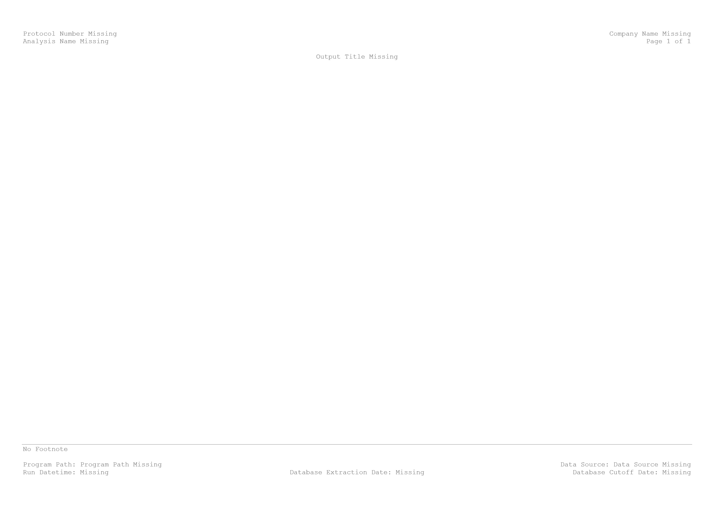
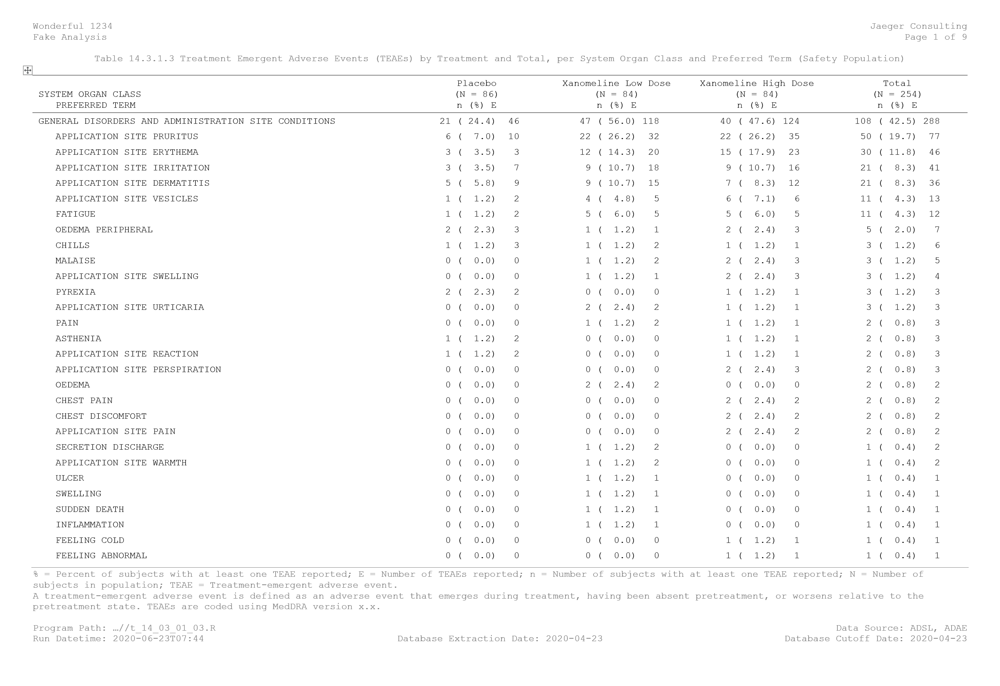

Tables, figures and listings with R
R, combined with R Markdown (Xie, Allaire, and Grolemund 2018; Allaire et al. 2020) and other packages, is an alternative for creating fully traceable end-text tables, figures and listings for Section 14 and Section 16 of clinical study reports. A similar approach can be used to create in-text outputs.
1. Setting up the project folder
1.1. Project folder
Before being able to produce any output, it is recommended to set up the project folder. In my case, I’m creating the project folder using RStudio. Version control is ensured using a git repository.
1.2. Connect your local repository with GitHub
If it is needed, the local repository can simply be connected with GitHub. Just create a personal token under https://github.com/settings/tokens and the function use_github from the package usethis.
2. Template for the table, figure or listing
The template called in the YAML metadata is the backbone of the table, figure or listing output. Both the formatting and the fields will play a key role in the production of the output.
2.1. Formatting of the template
First, the formatting for the header, footer and main text zone of the template is to be chosen. In my case, the font is set at Courier New, style regular and size at 8pt. In addition, the spacing is set at 0 pt before and after each paragraph and with single line spacing within a paragraph.
2.2. Fields
The next important part is to specify fields that will contain the relevant information needed in the header and the footer. It is extremely important to liaise with the medical writers to ensure that all relevant information needed for the clinical study report is present in the template. Usually for the end-text outputs, the followings are present in the header: protocol name, company name, analysis name, page numbering and the title of the output. For the footer, the followings are present: the footnotes, the program path, the data source, the run datetime, the database extraction date and the database cut-off date. For in-text outputs, information might slightly differ.
In the template, each information is a field. When the R Markdown will be knitted, information from the YAML metadata will be used. In the image below, the text “Protocol Number Missing” is in fact the following field { IF “{ DOCPROPERTY ProtocolNumber }” = “Error! Unknown document property name.” “Protocol Number Missing” “{ DOCPROPERTY ProtocolNumber }” }.

3. Creating the output using an R Markdown file
3.1 Setting up the YAML metadata
An R Markdown file, with default output set at Word document can now be created. The YAML metadata will inform the document properties of the output. In the below, the first 9 elements will be used for the header and the footer of the output. The last 3 elements are specifying that the output will be a Word document with the reference document being the template just created.
---
ProtocolNumber: "Wonderful 1234"
CompanyName: "Jaeger Consulting"
AnalysisName: "Fake Analysis"
OutputTitle: "Table 14.3.1.3 Treatment Emergent Adverse Events (TEAEs) by Treatment and Total, per System Organ Class and Preferred Term (Safety Population)"
ProgramPath: "...//t_14_03_01_03.R"
DataSource: "ADSL, ADAE"
RunDatetime: "`r format(Sys.time(), '%Y-%m-%dT%H:%M')`"
DatabaseExtractionDate: "2020-04-23"
DatabaseCutoffDate: "2020-04-23"
output:
word_document:
reference_docx: './002_Appendix/Format/reference_styles_appendix.docx'
---3.2 Working on the content of the output
The next steps are quite easy. It will just consist to create the R code to create the table, figure or listing of interest. Working with R Markdown will then ensure that the main content is within the body of the document.
In my case, I was interested in creating a summary table for the treatment emergent adverse events by treatment and in total, per the system organ class and preferred term. To do so, I have:
- downloaded the datasets adsl.xpt and adae.xpt available on the free repository ;
- imported it in the environment of my R project using the function sasxport.get from the package Hmisc;
- worked on creating summary information (number of subjects with at least one event, percentage of subjects with at least one event and number of events) with standard ordering for adverse events summary tables;
- reported the table using the function flextable from the package flextable.
3.3 Knit
Once the R Markdown file is ready, you can simply knit it using the shortcut Ctrl+Shift+K. In case the output is not expected to be created in the same folder than the R Markdown file, the function render from the package rmarkdown can be used.
The image below is a printscreen of the output created.

Post created on 2020-06-16. Last update on 2023-08-30.
References


Jaeger Consulting © 2023